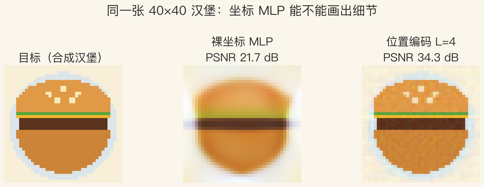
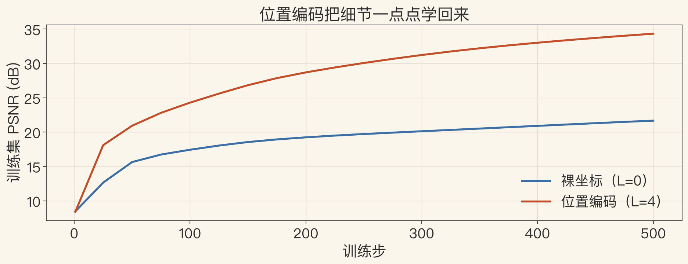
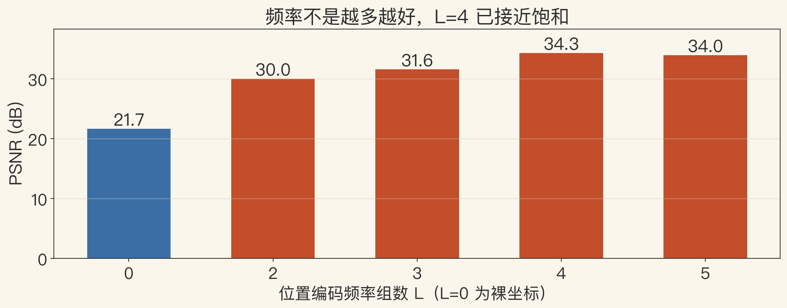

实验课+习题 · 第13/14章
把 NeRF 压到一张小图
把 NeRF 压到一张 40×40 的汉堡图。
先看最小闭环：坐标进，颜色出。
只问一件事：位置编码加不加，差在哪。
不写 CUDA，只用 numpy 和一张小图。
依据：原书第 833/906–907 页；本集实验
本集三问
位置编码有没有用
训练怎么收敛
频率组数怎么选
正课第一百二十集
01 / 12
原书第 858–859 页 · 习题
习题地图：13.3–13.8
13.3 配准，13.4 SDF 合并，13.5 表面简化。
13.6 建筑建模，13.7 人体跟踪，13.8 3D 摄影。
13.3–13.5 接前面重建链的三集。
13.6 和 13.8 是开放式大作业，只给拆解。
依据：原书第 858–859 页
两条线
习题：第 13 章几何重建
迷你 NeRF：第 14 章神经表示
先看地图，再挑一道做
正课第一百二十集
02 / 12
原书第 833 页 · NeRF 桥接
最小闭环：坐标、编码、MLP
书上第 833 页：NeRF 用射线方向作输入。
输出连续不透明度和辐射值，再做射线追踪。
压到二维：坐标 (x,y) 进网络，吐 RGB。
位置编码把坐标展开成正弦、余弦再送进 MLP。
依据：原书第 833 页；本集实验
最小闭环四步
采样坐标
做位置编码
过 MLP
算损失
正课第一百二十集
03 / 12
原书第 906 页 · 频谱偏置
裸坐标：为什么画不出细节
裸坐标只有两个数，网络只看到低频。
汉堡的芝麻、生菜边、面包轮廓都是高频。
位置编码是正弦倍频，对 MLP 表示细节是必需的。
输入没有高频，网络再大也只能拟合低频。
依据：原书第 906 页
问题在输入
裸坐标：只有 L=0 一组
位置编码：多组正弦倍频
频率越高，正弦波越密
正课第一百二十集
04 / 12
实验一 · 位置编码
看图：同一张图的三个版本
同一张 40×40 汉堡，同一个网络。
裸坐标 PSNR 21.68 分贝。
位置编码 L=4 是 34.35 分贝。
差 12.67 分贝，差在细节。
依据：本集实验

目标 / 裸坐标 / 位置编码：同一张汉堡｜程序生成，未用教材或论文原图
正课第一百二十集
05 / 12
实验一 · 训练日志
训练 500 步：损失降了多少
训练 500 步，位置编码损失从 0.1442 降到 0.0004。
降了九成以上。
裸坐标的曲线早早进入平台。
瓶颈不在优化器，在输入表示。
依据：本集实验（500 步，隐藏 48，学习率 0.01）
读曲线的顺序
先看有没有平台
再看是改数据、改模型还是改输入
改输入往往最便宜
正课第一百二十集
06 / 12
实验一 · 训练曲线
看图：位置编码学得快
两条曲线从同一起点出发。
位置编码一路往上，前 100 步拉开差距。
裸坐标在 20 分贝附近就平了。
换编码比加训练步更划算。
依据：本集实验

训练步 vs PSNR：裸坐标与位置编码｜程序生成，未用教材或论文原图
正课第一百二十集
07 / 12
原书第 906 页 + 实验二
频率扫描：L=4 饱和
L=0 是 21.68，L=2 是 30.04，L=3 是 31.6。
L=4 是 34.35，L=5 是 33.98，不再涨。
频率不是越多越好，太少画不出细节。
太多会增加输入维度，还可能过拟合。
依据：原书第 906 页；本集实验
频率扫描读数
L=0：21.68 分贝
L=4：34.35 分贝
L=5：33.98 分贝，接近饱和
正课第一百二十集
08 / 12
实验二 · 频率扫描
看图：不是越大越清楚
L=4 的柱子最高，L=5 反而略低。
L=2 到 L=4 是一段明显上升。
扫描时固定网络宽度、步数、学习率。
只动 L，柱子高低才能归因到频率。
依据：本集实验

频率组数 L vs PSNR：L=4 饱和｜程序生成，未用教材或论文原图
正课第一百二十集
09 / 12
原书第 906 页 · 多分辨率
连续表示：40×40 训练，80×80 查询
坐标网络是连续表示，训练分辨率不等于查询分辨率。
80×80 查询 PSNR 还有 23.46 分贝。
参数只多输入层 768 个，等于 16×48。
隐藏层宽度没变；分辨率翻倍，误差也放大。
依据：原书第 906 页；本集实验
参数账
输入：2 维变 18 维
第一层权重多 768 个
隐藏层完全没变
正课第一百二十集
10 / 12
原书第 858–859/907 页 · 真 NeRF
放回真 NeRF：还缺什么
真 NeRF 还需要体积渲染、视角方向、多张输入图。
书上第 907 页：需要大量受控均匀光照的静态物体图像。
习题 13.7 的人体跟踪接动态场景。
升级下一步：视角方向、射线采样、alpha 合成。
依据：原书第 858–859/907 页
迷你 lab 之外
体积渲染
视角方向
多张输入图
射线采样与 alpha 合成
正课第一百二十集
11 / 12
总结 · 下一集视图插值
总结：先跑通最小闭环
迷你 NeRF 是二维坐标 MLP，不是完整 3D NeRF。
位置编码把 PSNR 从 21.68 拉到 34.35。
习题线把配准、融合、简化、建筑建模和 3D 摄影串起来。
下一集：两幅图像之间怎么生成新视角。
依据：原书第 833/857–859/906–907 页
三句话
二维坐标 MLP，不是完整 3D NeRF
位置编码 21.68→34.35
先跑通最小闭环，再谈完整系统
正课第一百二十集
12 / 12